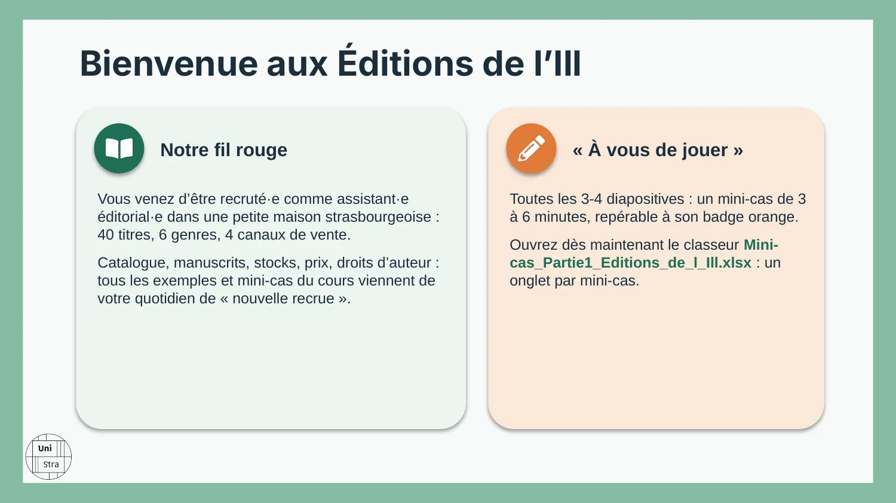
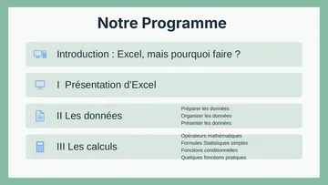
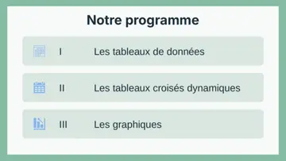
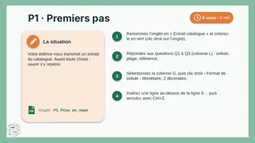

Master Édition · Faculté des lettres · Université de Strasbourg
Module Excel
Vous venez d’être recruté·e comme assistant·e éditorial·e aux Éditions de l’Ill, une petite maison strasbourgeoise : 40 titres, 6 genres, 4 canaux de vente. Catalogue, manuscrits, stocks, prix, droits d’auteur : tous les exemples et exercices du cours viennent de ce quotidien.
Objectif du module : savoir lire, construire et vérifier un tableau, y compris quand une IA vous propose une formule ou une synthèse.


Partie I
Présentation d’Excel, préparer et organiser les données, mise en forme conditionnelle, formules, $ et F4, SI / ET / OU, NB.SI, SOMME.SI, RECHERCHEV, INDEX + EQUIV, RECHERCHEX.
65 diapositives · mini-cas P1 à P9 →
Partie II
Tableaux « intelligents » (Ctrl+T), tableaux croisés dynamiques, choisir le bon graphique, vérifier une synthèse produite par une IA.
28 diapositives · mini-cas Q1 à Q4 →
Mini-cas
Les 13 exercices « À vous de jouer » réunis sur une page, avec les classeurs à télécharger.
P1 → Q4 →Pour bien démarrer
- Téléchargez le classeur de la partie (page Fichiers & raccourcis).
- Suivez les diapositives ; le badge orange À vous signale un mini-cas.
- Ouvrez l’onglet indiqué dans le classeur et suivez les étapes.
Certaines fonctions (RECHERCHEX notamment) demandent Excel 365 ou Excel 2021 et plus récent.